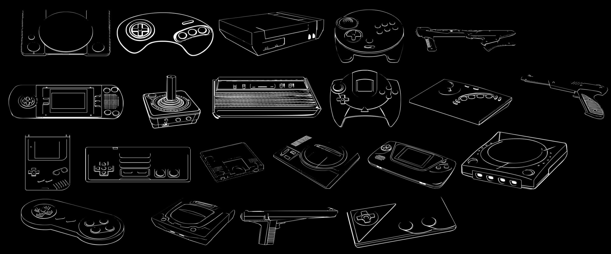

Conheça aqui uma breve história dos consoles existentes até o momento, que marcaram gerações e foram fundamentais para a evolução dos jogos até onde conhecemos hoje em dia.


Explore a história por trás da criação dos consoles portáteis e como se deu a sua evolução desde o ano de 1979.
Atualizados 3 minutos atrás
Descubra os jogos mais premiados de suas gerações desde 1980.
Atualizados 3 minutos atrás

Saiba mais sobre o hardware de qual é composto cada um dos consoles e como vem evoluindo cada aspécto para uma melhor jogabilidade e mais realista.
Atualizados 3 minutos atrás